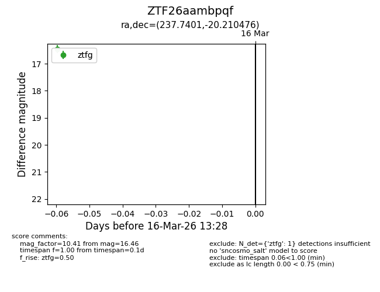
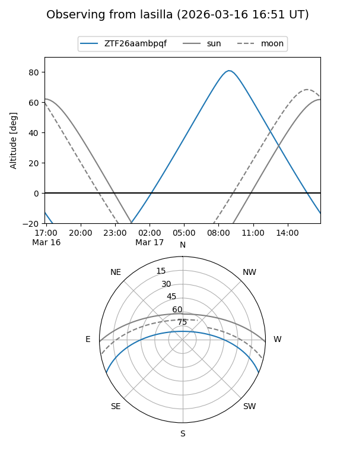
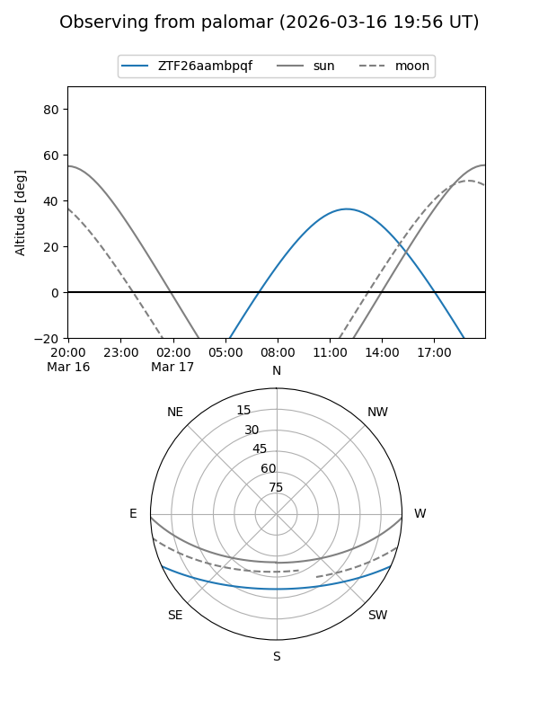

ZTF26aambpqf
Target ZTF26aambpqf at 2026-03-16 13:30
Aliases and brokers:
FINK: link
Lasair: link
ALeRCE: link
alt names
ZTF26aambpqf (ztf,fink_ztf)
Coordinates:
equatorial (ra, dec) = 237.7401,-20.21048
equatorial (HMS+DMS) = 15:50:57.63,-20:12:37.71
galactic (l, b) = (350.2496,+25.73884)
Flags:
Photometry:
last ztfg=16.46
1 ztfg detections
Lightcurve

Visibility


Additional plots